건축산업기사 (2003-08-10 기출문제)
1과목: 건축계획
1. 침대의 배치관계를 표시한 것 중 가장 적절한 것은?
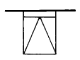
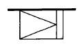
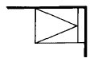
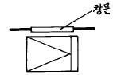
(정답률: 36%)

2. 한식주택과 양식주택을 비교하여 볼 때 한식주택의 특징으로 가장 적합하지 않은 것은?
- 실의 기능은 융통성이 낮다.
- 실의 독립성이 낮다.
- 평면의 구성은 상대적으로 개방적이다.
- 실의 호칭은 대부분 실의 위치에 따라 정한다.
(정답률: 37%)
3. 사무소 건축계획에서 층고를 낮게 잡는 이유와 가장 관계가 먼 것은?
- 엘리베이터의 왕복시간을 단축하기 위하여
- 많은 층수를 얻기 위하여
- 건축 공사비를 싸게하기 위하여
- 에너지 절약을 하기 위하여
(정답률: 알수없음)
4. 사무소건축계획에서 코어시스템(core system)을 채용하는 이유로 가장 부적당한 것은?
- 구조적인 이점
- 임대면적의 증가
- 피난상의 유리
- 설비계통의 집중
(정답률: 19%)
5. 상점의 숍 프론트(shop front) 분류 중 외부와의 관계에 의한 분류라고 보기 어려운 것은?
- 개방형
- 중2층형
- 폐쇄형
- 혼합형
(정답률: 74%)
6. 상점 계획에 관한 설명중 부적당한 것은?
- 대면 판매형식은 진열면적이 증가한다.
- 파사드(fasade)는 대중성, 유인성이 있어야 한다.
- 종업원과 손님의 동선은 교차되지 않는 것이 바람직하다.
- 매장의 바닥은 요철이 없게 한다.
(정답률: 43%)
7. 상점에 있어서 진열창(show-window)의 반사를 방지하기 위한 조치로 가장 적합하지 않은 것은?
- 진열창내의 밝기를 외부보다 낮게 한다.
- 차양을 달아 진열창 외부에 그늘을 준다.
- 진열창의 유리면을 경사지게 한다.
- 곡면 유리를 사용한다.
(정답률: 65%)
8. 초등학교에 대한 기술 중 적합하지 않은 것은?
- 동일 학년의 학급은 가급적 동일층에 배치할 수 있도록 계획한다.
- 저학년의 학급일수록 지면에 가깝게 배치할 수 있도록 계획한다.
- 저학년에서는 플라툰형(P형)의 방식으로 운영할 수 있도록 계획하는 것이 바람직하다.
- 초급학년의 경우 학급 상호의 관계도 될 수 있는대로 고립시켜 놓는다.
(정답률: 54%)
9. 공장 지붕의 종류 중 채광 및 환기에 적합한 것으로 채광창의 경사에 따라 채광이 조절되며, 상부창의 개폐에 의해 환기량이 조절되는 것은?
- 평지붕
- 솟음지붕
- 뾰족지붕
- 샤렌지붕
(정답률: 72%)
10. 사무소건축의 실단위계획에서 개방식 배치의 장점이 아닌것은?
- 공간 절약
- 융통성
- 프라이버시 확보
- 친밀한 분위기 조성
(정답률: 72%)
11. 학교시설의 강당 및 실내체육관 계획에 있어 가장 부적절한 설명은?
- 강당 겸 체육관인 경우 커뮤니티 시설로서 이용될 수 있도록 고려하여야 한다.
- 실내체육관의 크기는 농구코트를 기준으로 한다.
- 강당 겸 체육관인 경우 강당으로서의 목적에 치중하여 계획한다.
- 강당의 크기는 반드시 전원을 수용할 수 있도록 할 필요는 없다.
(정답률: 64%)
12. 일반주택의 평면계획에 관하여 옳지 않은 것은?
- 현관의 위치는 도로와의 관계, 대지의 형태에 영향을 받는다.
- 부엌은 가사노동의 경감을 위해 가급적 크게 만들어 워크 트라이앵글(work triangle)의 변의 길이를 길게 한다.
- 부부침실보다는 낮에 많이 사용되는 노인실이나 아동실이 우선적으로 좋은 위치를 차지하는 것이 바람직하다.
- 거실이 통로가 되지 않도록 평면계획시 고려해야 한다.
(정답률: 75%)
13. 공장의 창고건축에 대한 설명 중 가장 옳지 않은 것은?
- 단층창고의 출입문은 보통 크게 내는 것이 좋으며, 통상적으로 기둥 사이의 전체길이를 문으로 한다.
- 다층창고의 층높이는 대체로 3.65m 정도가 적당하다.
- 단층창고의 경우 구조, 재료가 허용하는 한 스팬을 넓게 한다.
- 다층창고는 지가가 낮고, 부지가 넓은 경우에 주로 이용된다.
(정답률: 28%)
14. 백화점 매장의 가구 배치 및 고객용 통로의 배치 형식에 대한 설명 중 올바르지 않은 것은?
- 직각배치는 경제적이나 단조로운 느낌을 줄 수 있다.
- 사행배치는 매장의 구석까지 가기 어려운 단점이 있다.
- 자유유선형 배치는 매장의 변경 및 이동이 곤란하다.
- 직각배치는 고객의 통행량에 따라 통로폭을 조절하기 어려워 국부적인 혼란을 일으키기가 쉽다.
(정답률: 알수없음)
15. 학교건축 계획시 고려하여야 할 사항으로 적합하지 않은 것은?
- 교과내용의 변화에 적응할 수 있어야 한다.
- 교실의 융통성이 확보되어야 한다.
- 지역인의 접근 가능성이 차단되어야 한다.
- 학교운영방식의 변화에 대응할 수 있어야 한다.
(정답률: 80%)
16. 공동주택 배치계획시 고려해야 할 사항과 가장 관계가 먼 것은?
- 각 세대의 일조를 위한 건물간의 간격
- 피난 등을 위한 옥외공간의 확보
- 단지내 도로, 주동 또는 놀이터에서 오는 소음방지
- 건물 외부디자인
(정답률: 74%)
17. 제한된 공간에서 부엌의 각종 설비가 작업하기에 가장 적절하게 배열한 것은?
- 냉장고→ 레인지→ 개수대→ 작업대→ 배선대
- 냉장고→ 개수대→ 작업대→ 레인지→ 배선대
- 냉장고→ 작업대→ 레인지→ 개수대→ 배선대
- 냉장고→ 레인지→ 작업대→ 개수대→ 배선대
(정답률: 50%)
18. 연립주택의 형식중 테라스 하우스(terrace house)에 관한 설명으로 옳지 않은 것은?
- 테라스 하우스는 지형에 따라 자연형과 인공형으로 구분할 수 있다.
- 자연형 테라스 하우스는 평지에 테라스형으로 건립하는 것을 말한다.
- 경사지일 경우 도로를 중심으로 상향식 주택과 하향식 주택으로 구분할 수 있다.
- 테라스 하우스는 경사도에 따라 그 밀도가 크게 좌우된다.
(정답률: 28%)
19. 공장건축의 환경계획 중 옳지 않은 것은?
- 실내의 조명은 자연광선보다는 인공조명을 될 수 있는대로 사용하도록 한다.
- 조명계획시 적정조도, 조도분포, 조도의 시간적 변동의 유무 등을 고려한다.
- 채광형식은 공장의 형태를 결정하는 중요한 요소이면서 냉난방· 환기계획과도 관련이 있다.
- 환기방법은 공장의 종류, 작업조건 등에 따라 결정한다.
(정답률: 34%)
20. 다음 중 구조코어로서 가장 바람직한 형식으로 바닥면적이 큰 경우에 많이 사용되지만 내부공간과 외관이 모두 획일적으로 되기 쉬운 코어 형식은?
- 편코어형
- 중심코어형
- 외코어형
- 양측코어형
(정답률: 59%)
2과목: 건축시공
21. 다음 재료 중 열전도율이 가장 높은 것은?
- 우레아폼
- 경질 우레탄폼
- 스티로폼
- 암면
(정답률: 34%)
22. 포졸란 활성으로 수화열억제, 장기강도증진의 용도에 쓰이는 혼화재의 종류로 거리가 가장 먼 것은?
- 실리카 흄
- 규산질 미분말
- 플라이 애쉬
- 규산백토
(정답률: 29%)
23. 발주자가 요구하는 설계시방서에 적합한 품질의 구조물을 경제적으로 축조하는 수단의 시스템을 품질관리의 4단계라 한다. 품질관리의 4단계의 순서로 올바른 것은?
- 계획 → 실시 → 검토 → 시정
- 계획 → 검토 → 실시 → 시정
- 시정 → 계획 → 실시 → 검토
- 시정 → 계획 → 검토 → 실시
(정답률: 39%)
24. 타일 붙이기 공법중 거푸집면 타일먼저붙이기 공법의 종류로서 옳지 않은 것은 ?
- 타일시트법
- 줄눈대법
- 유니트 타일 붙이기법
- 줄눈틀법
(정답률: 알수없음)
25. 콘크리트 배합설계시 유의할 점으로 거리가 먼 것은?
- 콘크리트가 소정의 강도를 가질 것
- 워커빌리티가 좋을 것
- 소정의 슬럼프를 가질 것
- 가능한한 높은 강도를 확보하기 위하여 시멘트 양을 증가시킬 것
(정답률: 50%)
26. 다음의 기술 중 옳지 않은 것은?
- 긴결재는 거푸집의 정확한 위치, 치수를 유지하기 위한 것이다.
- 박리제는 콘크리트의 수분흡수를 방지하기 위한 것이다.
- 격리제는 거푸집의 측벽간 간격을 유지하기 위한 것이다.
- 간격재는 철근의 피복두께를 형성하기 위한 것이다.
(정답률: 알수없음)
27. 여닫이문, 여닫이창에 사용하지 않는 창호철물은?
- 정첩
- 행거레일
- 피봇힌지
- 자유정첩
(정답률: 40%)
28. 다음 중 건축공사의 직접공사비 원가로 바르게 구성된 것은?
- 재료비, 노무비, 장비비, 간접비
- 재료비, 노무비, 장비비, 경비
- 재료비, 노무비, 외주비, 경비
- 재료비, 노무비, 외주비, 간접비
(정답률: 50%)
29. 하부지반이 연약할 때 흙막이 바깥에 있는 배면토의 중량을 못견디어 흙파기 저면의 흙이 붕괴되고 흙막이 바깥에 있는 흙이 안으로 밀려 불룩하게 되는 현상은?
- 히빙파괴
- 보일링
- 파이핑
- 압밀
(정답률: 알수없음)
30. 창호공사의 시공방법으로 옳지 않은 것은?
- 나무퍼티는 퍼티못으로 양끝을 누르고 중간 15cm마다 박는다.
- 강제창호의 설치는 먼저세우기와 나중세우기가 있으나 보통 먼저세우기로 한다.
- 알루미늄 새시는 알칼리에 약하므로 모르타르 등에 직접 접촉하지 않는다.
- 알루미늄 새시는 녹이 나지 않으므로 도장이 필요없다.
(정답률: 0%)
31. 다음 방수공법중 비교적 저렴하고 시공이 용이하며 지하실의 내방수나 소규모인 지붕방수 등과 같은 비교적 경미한 방수공법으로 채용되는 것은?
- 시멘트액체 방수공법
- 아스팔트 방수공법
- 실링 방수공법
- 시이트 방수공법
(정답률: 34%)
32. 프리즘 타일(Prism tile)은 어느 곳에 주로 사용하는가?
- 흡음용
- 방화용
- 지하실 채광용
- 장식용
(정답률: 알수없음)
33. 슬라이딩 폼(sliding form)에 관한 기술 중 틀린 것은?
- 공사기한을 단축할 수 있다.
- 연속적으로 콘크리트를 부어넣으므로 콘크리트의 일체성이 확보된다.
- 사일로(silo) 등의 공사에는 부적당하다.
- 내외부의 비계가 불필요하다.
(정답률: 알수없음)
34. 중앙부의 흙을 먼저 파내고 중앙부의 구조물을 구축한 후 주위부분의 흙을 파내는 흙막이 공법은?
- 아일랜드 공법
- 트랜치 컷 공법
- 심초공법
- 개방잠함 공법
(정답률: 58%)
35. 철골 용접부의 불량을 나타내는 용어가 아닌 것은?
- 블로홀(blow hole)
- 위빙(weaving)
- 크랙(crack)
- 언더컷(under cut)
(정답률: 47%)
36. 도장공사에서 녹막이 도료의 종류가 아닌 것은?
- 아연분말 도료
- 역청질 도료
- 징크로메이트 도료
- 규산소오다 도료
(정답률: 43%)
37. 건설공사 입찰에 있어 불공정 하도급 거래를 예방하고 하도급 계열화를 촉진하기 위한 목적으로 시행하는 제도는?
- 사전자격심사 제도
- 부대입찰제
- 대안입찰
- 내역입찰
(정답률: 50%)
38. 웰포인트공법에 관한 내용으로 옳지 않은 것은?
- 출수가 많고 깊은 터파기에 있어서의 지하수 배수공법의 일종이다.
- 지내력이 증가한다.
- 수분이 많은 점토질 지반에 적당한 공법이다.
- 지하수위를 낮춘다.
(정답률: 16%)
39. 벽면적 1m2에 소요되는 블록의 수량으로서 적당한 것은? (단, 줄눈은 1cm, 블록의 크기는 길이가 39cm, 두께가 15cm이다)
- 9매
- 13매
- 17매
- 19매
(정답률: 17%)
40. ALC(autoclaved lightweight concrete)의 장점이 아닌 것은?
- 가소성
- 단열성
- 흡음. 차음성
- 내구성
(정답률: 50%)
3과목: 건축구조
41. 가새에 관한 다음 기술 중 잘못된 것은?
- 주요 건물에는 한방향 가새만으로 부족할 때가 있다.
- 가새는 버팀대보다는 수평력에 약하지만 버팀대를 사용할 수 없는 곳에 유리하다.
- 가새는 단면이 너무 크면 기둥에 휨모멘트가 생기게 되어 좌절할 우려가 있다.
- 가새의 경사는 45° 에 가까울수록 유리하다.
(정답률: 50%)
42. 그림과 같은 단면에서 두부재의 휨에 대한 강도의 비로 가장 적당한 것은? (A : B)
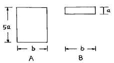
- 1 : 1
- 5 : 1
- 25 : 1
- 125 : 1
(정답률: 22%)
43. 보의 폭 b=30cm, fck=210kgf/cm2 인 단근보를 강도설계법으로 설계하고자 할 때 콘크리트의 전압축응력은 약 얼마인가? (단, 응력블록의 깊이 a = 12cm 임)
- 53.6tf
- 64.3tf
- 70.0tf
- 72.5tf
(정답률: 55%)
44. 평면상 그림과 같은 지붕형상을 무엇이라 하는가?
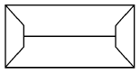
- 모임지붕
- 박공지붕
- 방형지붕
- 합각지붕
(정답률: 28%)
45. 경량 철골조에 대한 기술 중 틀린 것은?
- 공사비가 보통 철골조에 비해 저렴하다.
- 그다지 크지 않은 소규모의 건축물에 사용된다.
- 접합에는 리벳, 볼트가 사용되며 용접은 판의 두께가 얇기 때문에 사용할 수 없다.
- 경량형강재는 일반의 열간압연형강재에 비하면 단위 중량에 대한 단면2차 모멘트가 크다.
(정답률: 29%)
46. 다음 용어에서 서로 관계 있는것 끼리 연결한 것은?
- 인서트 - 창호
- 징두리 - 벽의 하부
- 플로어 힌지 - 철골
- 턴버클 - 압축재
(정답률: 0%)
47. 강도설계법에 의한 철근콘크리트보 설계의 최소철근비는? (단, 철근의 기준 항복강도 fy = 3,500kgf/cm2 임)
- 0.002
- 0.0025
- 0.003
- 0.004
(정답률: 알수없음)
48. 강도설계법에서 그림과 같은 단면의 평형상태에서의 등가응력블럭의 깊이는? (단, Cb = 중립축거리, fck=240kgf/cm2, fy=4,000kgf/cm2 )(오류 신고가 접수된 문제입니다. 반드시 정답과 해설을 확인하시기 바랍니다.)
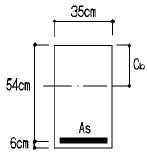
- 22.06 cm
- 24.06 cm
- 26.06 cm
- 27.54 cm
(정답률: 9%)
49. 부재길이가 3.5m 이고, 지름이 1.6㎝ 인 원형단면봉에 3tf 의 축하중을 가하여 2.2㎜ 늘어났을때 이 재료의 탄성계수 E는 약 얼마인가?
- E = 1776220㎏f/㎝2
- E = 1896340㎏f/㎝2
- E = 2176550㎏f/㎝2
- E = 2373760㎏f/㎝2
(정답률: 39%)
50. 다음 중 단면의 성질에 관한 설명이 잘못된 것은?
- 단면 2차 반경에 단면적을 곱하면 단면 2차 모멘트이다.
- 도심축에 대한 단면 2차 모멘트를 압축측거리 또는 인장측거리로 나눈 값을 단면계수라 한다.
- 단면 1차 모멘트가 0인 점을 단면의 도심이라 하며, 도심은 그 단면의 면적중심이 된다.
- 단면계수의 단위는 cm3, m3 이며, 부호는 항상(+)이다
(정답률: 32%)
51. 극한강도설계법에서 벽체 전 단면적에 대한 최소 수평철 근비로 옳은 것은? (단, fy=4000kgf/cm2, D16의 철근을 사용함.)
- 0.0012
- 0.0015
- 0.0020
- 0.0025
(정답률: 25%)
52. 다음 중 그림과 같은 보의 주근배치로 가장 알맞은 것은?
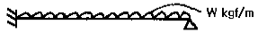
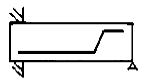
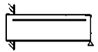
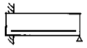
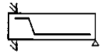
(정답률: 43%)
53. 벽돌 공간쌓기에 대한 설명으로 틀린 것은?
- 방습 및 단열에 효과가 있다.
- 내력벽의 두께는 공간을 포함한 벽체 전체 두께를 말한다.
- 연결재로서 벽돌을 사용할 경우 벽돌을 걸쳐대고 끝에는 이오토막 또는 칠오토막을 사용한다.
- 연결재의 배치, 거리 간격의 최대 수직거리는 40cm를 초과해서는 안된다.
(정답률: 10%)
54. 다음 그림과 같이 하중을 받고 있는 보에서 지점 B의 반력이 3W라면 하중 3W의 재하 위치 X는 얼마인가?
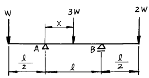
- ℓ/2
- ℓ/4
- ℓ/6
- ℓ/8
(정답률: 알수없음)
55. 그림과 같은 보에서 지점 B가 6t까지의 반력을 지지할 수 있다. 하중 9tonf는 A점에서 몇 m까지 이동할 수 있는가?
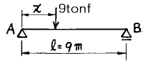
- 3m
- 4m
- 5m
- 6m
(정답률: 17%)
56. 그림과 같은 줄기초를 구축하려고 한다. 여기서 기초의 최소 나비 b는 약 얼마인가?
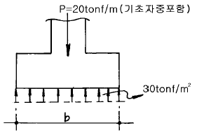
- 57㎝
- 67㎝
- 77㎝
- 87㎝
(정답률: 알수없음)
57. 강도설계법 적용시 폭이 30cm, 춤이 60cm인 단면의 최대 철근비를 구하면 얼마인가? (단, 압축철근은 없으며, 사용재료의 fck = 240 kgf/cm2, fy=4000 kgf/cm2 이다.)
- 0.0180
- 0.0195
- 0.0225
- 0.0260
(정답률: 알수없음)
58. 양단고정인 그림과 같은 보에서 A점의 휨모멘트는? (단, EI는 일정)
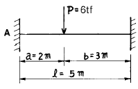
- -4.32tfㆍm
- 4.32tfㆍm
- -6.23tfㆍm
- 6.23tfㆍm
(정답률: 31%)
59. 건축물 기초의 부동침하 원인으로 부적당한 것은?
- 지하 수위가 변경되었을 때
- 이질지정을 하였을 때
- 기초의 배근량이 부족하였을 때
- 일부 증축하였을 때
(정답률: 30%)
60. 다음 중 지붕의 물매를 결정짓는 요소와 가장 관계가 먼 것은?
- 지붕면의 크기
- 지붕재료의 성질, 크기, 모양
- 풍우량, 적설량
- 지붕틀의 종류
(정답률: 54%)
4과목: 건축설비
61. 전기설비에서 점멸기의 위치 결정에 대한 설명 중 옳지 않은 것은?
- 개인실은 실내측에 둔다.
- 평상시 사람이 거주하지 않는 곳은 실내측에 설치한다.
- 긴 복도는 복도 양단에 설치하고 계단실에는 상·하 쌍방에 설치한다.
- 설치 높이는 바닥에서 1.2m로 한다.
(정답률: 39%)
62. 통신 설비에 관한 설명이 틀린 것은?
- 자석식 교환기는 오늘날 군용 외는 거의 사용하지 않는다.
- 확성방송설비의 주요 구성요소는 마이크로폰, 증폭기, 스피커이다.
- 인터폰 설비는 접속방식에 따라 모자식, 상호식, 복합식으로 나눌 수 있다.
- TV 안테나는 일반적으로 피뢰침 보호각 외부에 있게 한다.
(정답률: 알수없음)
63. 송풍기의 회전수 변화와 관련한 다음의 송풍기 성능 특성 중에서 옳은 것은?
- 풍량은 회전속도의 2제곱에 비례하여 변화한다.
- 압력은 회전속도의 2제곱에 비례하여 변화한다.
- 동력은 회전속도의 2제곱에 비례하여 변화한다.
- 풍량과 압력 및 동력은 회전속도에 반비례한다.
(정답률: 20%)
64. 특별고압[20 ∼ 30(㎸)]을 설치하는 옥내 변전실의 층높이는?
- 보밑 3.5m 이상
- 보밑 3.0m 이상
- 보밑 4.5m 이상
- 보밑 4.0m 이상
(정답률: 알수없음)
65. 조명 설비에 대한 설명 중 옳지 않은 것은?
- 백열전등은 형광등보다 공사비가 적게 들며 설치가 간단하다.
- 좋은 조명은 주광색에 가까워야 하며, 연색성이 양호 하여야 한다.
- 직접 조명은 건축화 조명보다 그림자가 부드러운 편이다.
- 전반확산조명은 상향과 하향의 출광비율이 거의 비슷하다.
(정답률: 54%)
66. 피뢰침 설비에 관한 다음 설명 중에서 옳은 것 ?
- 피뢰설비는 능력면에서 완전보호, 증강보호, 보통보호, 간이보호로 나눌 수 있다.
- 일반 건축물의 돌침 및 수평도체의 보호각은 80° 이다.
- 위험물을 저장· 제조 취급하는 건축물의 보호각은 60° 이다.
- 지반면상 10m 이상의 건축물에는 반드시 피뢰침을 설치하도록 되어 있다.
(정답률: 57%)
67. 다음 소방설비 중 요구되는 최소 방수량이 많은 것부터 순서가 옳은 것은?
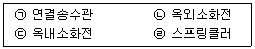
- ㉡ - ㉠ - ㉢ - ㉣
- ㉡ - ㉢ - ㉠ - ㉣
- ㉠ - ㉡ - ㉢ - ㉣
- ㉠ - ㉡ - ㉣ - ㉢
(정답률: 42%)
68. 난방부하 계산시 각 외벽을 통한 손실열량은 방위에 따른 방향계수에 의해 값을 보정하는데, 계수의 값이 큰 것부터 차례로 된 것은?
- 북 ＞ 동,서 ＞ 남
- 북 ＞ 남 ＞ 동,서
- 동 ＞ 남,북 ＞ 서
- 남 ＞ 북 ＞ 동,서
(정답률: 알수없음)
69. 급수관의 관경을 결정하는데 필요 없는 사항은?
- 급수관 균등표
- 배관 마찰저항 선도
- 급수방식
- 기구 연결관의 관경
(정답률: 20%)
70. 지역난방의 장단점에 대한 다음 설명 중 틀린 것은?
- 설비의 고도화에 따라 도시의 매연을 경감시킬 수 있다.
- 각 건물마다 유효면적이 증대되고 화재의 위험이 적다.
- 초기투자비는 싸지만 사용요금의 분배가 곤란하다.
- 각 건물마다 보일러 시설을 할 필요가 없으나 배관중의 열손실이 많다.
(정답률: 75%)
71. 대기압이 750㎜Hg일 때 보일러의 압력계가 3.8㎏/㎝2를 가리키고 있다. 이 때 보일러의 절대압력[㎏/㎝2]은?
- 3.83
- 4.50
- 4.82
- 4.93
(정답률: 17%)
72. 온수난방용 주철제방열기의 1m2당 1시간의 표준방열량은?
- 100㎉
- 250㎉
- 300㎉
- 450㎉
(정답률: 24%)
73. 전양정 30m, 양수량 15m3/h, 효율 65%, 여유율 0.2 인 양 수 펌프의 적당한 소요동력은?
- 0.00226kw
- 0.135kw
- 2.26kw
- 135.7kw
(정답률: 10%)
74. 다음 사항중 축전지 설비가 반드시 필요한 것은?
- 전열기(heater)의 전원
- 화재시 비상용 전원
- 실내 일반 전원
- 국부 조명의 전원
(정답률: 39%)
75. 배수트랩의 유효봉수깊이의 최소치는 일반적으로 얼마로 보는가?
- 50㎜
- 80㎜
- 100㎜
- 150㎜
(정답률: 34%)
76. 온수난방 배관에서 역환수식(Reverse-return)을 사용하는 적절한 이유는?
- 온수의 유량분배를 균일하게 하기 위하여
- 온수배관의 길이를 짧게 취하기 위하여
- 온수배관의 신축을 흡수시키기 위하여
- 온수배관의 보온을 하기 위하여
(정답률: 55%)
77. 증기난방 배관에서 저압측의 압력을 항상 일정하게 유지해 주는 부속은?
- 바이 패스 밸브(By pass valve)
- 감압 밸브(Pressure Reducing valve)
- 이중 서어비스 밸브(Double Service valve)
- 팩레스 밸브(Packless valve)
(정답률: 55%)
78. 공조시스템에서 직접적인 에너지 절약방안이 아닌 것은?
- 운전 제어
- 보수 관리
- 덕트 도장
- 시스템 개조
(정답률: 50%)
79. 보일러의 설계부하 계산에서 급탕량이 500ℓ /h일 때 급탕 부하는? (단, 급탕온도는 60℃, 급수온도는 0℃를 기준으로 한다.)
- 30,000㎉/h
- 35,000㎉/h
- 40,000㎉/h
- 45,000㎉/h
(정답률: 알수없음)
80. 다음의 수송설비에 관한 내용중 잘못 기술된 것은?
- 저속 엘리베이터의 구동 방식은 교류1단, 교류2단이 있다.
- 에스컬레이터는 경사 30도 이하, 속도 45m/min 이하로 한다.
- 직류 엘리베이터는 속도를 임의로 선택 할 수 있고 속도제어도 가능하다.
- 덤 웨이터의 전동기 용량은 최대 3HP이다.
(정답률: 7%)
5과목: 건축관계법규
81. 위험물저장 및 처리시설에 설치하는 돌침 및 피뢰도체의 보호각의 기준은?
- 45도
- 50도
- 60도
- 75도
(정답률: 34%)
82. 에너지를 대량으로 소비하는 건축물 또는 연면적이 몇 제곱미터 이상인 건축물(창고시설을 제외한다)에 급수· 배수· 난방 및 환기의 건축설비를 설치하는 경우에는 국가기술자격법에 의한 건축기계설비기술사 또는 공조냉동기계기술사의 협력을 받아야 하는가?
- 1,000m2 이상
- 2,000m2 이상
- 5,000m2 이상
- 10,000m2 이상
(정답률: 알수없음)
83. 건축물에 설치하는 굴뚝에 관한 기준으로 옳지 않은 것은?
- 굴뚝의 옥상 돌출부는 지붕면으로부터의 수직거리를 1m 이상으로 할 것
- 굴뚝의 상단으로부터 수평거리 1m 이내에 다른 건축물이 있는 경우에는 그 건축물의 처마보다 1.5m 이상 높게 할 것
- 금속제 또는 석면제 굴뚝으로서 건축물의 지붕속·반자위 및 가장 아랫바닥밑에 있는 굴뚝의 부분은 금속외의 불연재료로 덮을 것
- 금속제 또는 석면제 굴뚝은 목재 기타 가연재료로부터 15㎝ 이상 떨어져서 설치할 것
(정답률: 24%)
84. 대지안의 조경면적으로 산정하는 옥상 조경면적은 전체 조경면적의 몇 %를 초과하지 못하는가?
- 20%
- 30%
- 40%
- 50%
(정답률: 24%)
85. 지방건축위원회에서 구조안전· 피난 및 소방에 관한 사항을 심의하지 않아도 되는 건축물의 용도는?
- 판매 및 영업시설
- 의료시설 중 종합병원
- 관광휴게시설
- 문화 및 집회시설
(정답률: 18%)
86. 건축물의 내부에 설치하는 피난계단의 구조로 옳지 않은 것은?
- 계단실의 바깥쪽과 접하는 창문등은 당해 건축물의 다른 부분에 설치하는 창문등으로부터 1m 이상의 거리를 두고 설치할 것
- 계단실의 실내에 접하는 부분의 마감은 불연재료로할 것
- 건축물의 내부에서 계단실로 통하는 출입구의 유효너비는 0.9m이상으로 할 것
- 건축물의 내부와 접하는 계단실의 창문등은 망이 들어 있는 유리의 붙박이창으로서 그 면적을 각각 1m2이하로 할 것
(정답률: 55%)
87. 노상주차장의 구조 및 설비기준에 관한 내용 중 옳지 않은 것은?
- 종단구배가 4%를 초과하는 도로에 설치하여서는 아니된다.
- 너비 8m 미만의 도로에 설치하여서는 아니된다.
- 주간선도로에 설치하여서는 아니된다.
- 고속도로에 설치하여서는 아니된다.
(정답률: 30%)
88. 건축물의 용도분류상 단독주택에 해당되지 않는 것은?
- 다중주택
- 다가구주택
- 기숙사
- 공관
(정답률: 54%)
89. 다음 중 시설물의 용도 및 규모상 부설주차장의 설치의무 면제대상이 아닌 것은?
- 연면적 5,000m2의 판매 및 영업시설
- 연면적 10,000m2의 숙박시설
- 연면적 10,000m2의 공연장
- 연면적 15,000m2의 위락시설
(정답률: 알수없음)
90. 다음 중 건축물을 건축하거나 대수선하는 경우에 건설교통부령의 구조기준 및 구조계산에 따라 구조의 안전을 확인하여야 하는 건축물은?
- 높이가 12m인 건축물
- 처마높이가 10m인 건축물
- 내력벽의 길이가 15m인 건축물
- 기둥과 기둥사이의 거리가 9m인 건축물
(정답률: 10%)
91. 그림과 같은 단면을 가진 거실의 반자높이로 맞는 것은?
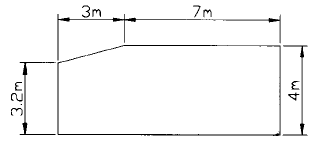
- 3.65m
- 3.88m
- 4.⑤m
- 4.32m
(정답률: 48%)
92. 공개공지 또는 공개공간의 설치면적을 건축조례로 정할 수 있는 최대면적은 대지면적의 몇 %인가?
- 5%
- 10%
- 15%
- 20%
(정답률: 알수없음)
93. 다음 중 다중이용건축물에 해당되는 것은?
- 문화 및 집회시설 용도에 쓰이는 바닥 면적의 합계가 4000m2이상인 건축물
- 판매 및 영업시설 용도에 쓰이는 바닥면적의 합계가 3000m2이상인 건축물
- 관광숙박시설 용도에 쓰이는 바닥면적의 합계가 6000m2이상인 건축물
- 10층 이상인 건축물
(정답률: 알수없음)
94. 부설주차장의 인근설치 규정에서 시설물의 부지인근의 범위로 옳은 것은?
- 직선거리 : 100m이내, 도보거리 : 300m이내
- 직선거리 : 300m이내, 도보거리 : 600m이내
- 직선거리 : 300m이내, 도보거리 : 800m이내
- 직선거리 : 600m이내, 도보거리 : 300m이내
(정답률: 알수없음)
95. 도시계획시설 또는 도시계획시설 예정지에 건축을 허가할 수 있는 가설건축물의 구조가 아닌 것은?
- 목구조
- 벽돌구조
- 철골구조
- 철근콘크리트구조
(정답률: 알수없음)
96. 대형 기계식주차장치의 안전기준으로 옳지 않은 것은?(관련 규정 개정전 문제로 여기서는 기존 정답인 2번을 누르면 정답 처리됩니다. 자세한 내용은 해설을 참고하세요.)
- 주차구획의 크기 : 너비 2.3m이상, 높이 1.6m이상, 길이 5.95m이상
- 출입구의 크기 : 너비 2.3m이상, 높이 1.6m이상
- 운반기의 크기 : 바닥의 너비 1.85m이상
- 입출고하는 사람의 출입통로 : 너비 50cm이상, 높이 1.8m이상
(정답률: 25%)
97. 부설주차장을 설치하지 아니하고 단독주택을 건축할 수 있는 시설면적기준은?
- 130m2 이하
- 150m2 이하
- 200m2 이하
- 300m2 이하
(정답률: 10%)
98. 바닥면적의 합계가 1,000m2인 건축물을 다음 용도로 하는 경우 주요구조부를 내화구조로 하지 않아도 되는 것은?
- 체육관
- 창고
- 여객자동차터미널
- 공장
(정답률: 알수없음)
99. 건축물의 면적, 높이등의 산정방법에 대한 설명 중 틀린 것은?
- 층고가 1.5m인 다락의 면적은 바닥면적에 산입하지 아니한다.
- 용적률 산정시 연면적에는 지하층의 면적과 지상층의 주차용으로 사용되는 면적을 제외한다.
- 지하층은 건축물의 층수에 산입하지 아니한다.
- 사무소 건물의 지상층에 설치한 기계실의 경우에는 당해 부분의 면적을 바닥면적에 산입하지 아니한다.
(정답률: 알수없음)
100. 노상주차장에서 주차대수규모가 얼마 이상인 경우에 장애인전용주차구획을 1면 이상 설치하여야 하는가?
- 20대
- 30대
- 40대
- 50대
(정답률: 30%)